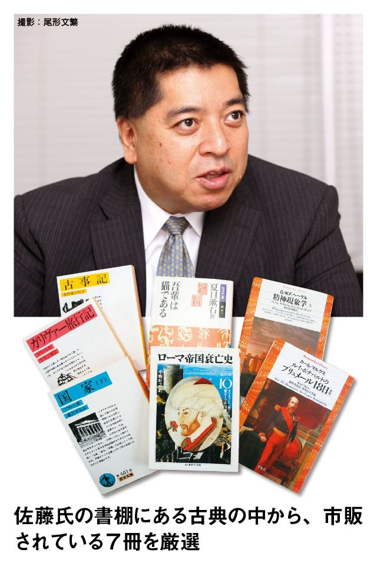

| 古典を読む！―週刊東洋経済eビジネス新書No.83 | |
| 週刊東洋経済編集部 & 桑原 幸作 & 武政 秀明 & 宇都宮 徹 & 山田 雄大 & 福田 恵介 & 高橋 志津子 & 吉川 明日香 & 並木 厚憲 & 堀越 千代 & 大塚 博子 & 石井 和貴子 & 中野 法子 & 筒井 幹雄 & 小林 由依 | |
| (2017) | |
古典を読む！ 目次
危機後の世界を古典から探る
古典に共通するのは、社会そして人間への深い洞察だ。たとえば近代経済学の祖スミスは、優れた道徳哲学の研究者だった。
資本主義の高度化は、世界に成長という果実をもたらした。だが、時に暴走し、バブルの崩壊、そして深刻な格差を引き起こす。そうした矛盾が、リーマンショックで一気に表面化した。
社会は何を失ったのか――。今多くの人がその解を古典に求めている。西洋思想の古典を数多く手掛ける翻訳家の中山元氏は言う。「ルソーにしろ、スミスにしろ、彼らの問題意識は資本主義の根っこにつながる。糸のほつれた分岐点を見つければ、社会が駄目になった理由がわかるはずだ」。
高橋伸彰・立命館大学教授は、マルクス『資本論』とケインズ『一般理論』、シュンペーターの『経済発展の理論』を３冊セットで読むことを薦める。「経済学は本来、人間が幸せに生きるにはどうしたらよいかを探る学問。それを再考するうえで３冊の古典は重要なヒントを含んでいる」（同氏）。危機後の世界を古典から探る作業が求められている。
今回特集では、初心者のための誌上講義から古典の読み方まで、多面的に探った。また、第一線で活躍するエコノミストや学者、評論家など６７人にアンケートを実施。それを基に今読むべき古典を厳選した。次に挙げた９冊は、特に本誌が薦める古典だ。
古典には先達が磨き上げた智慧が詰まっている。今回取り上げた古典は、東西の政治・経済から、思想・哲学・文芸まで８０冊。その読み方に正解はないが、まずは手に取っていただきたい。今を読み解くヒントが必ず隠されているはずだ。
著名６７人が厳選！ 今読むべき名著９冊
（注）複数巻からなる本の価格は、１巻目のみ記載。アンケート回答者（敬称略）一覧は本誌最後に
《社会のあり方を問い直す３冊》
『道徳感情論』アダム・スミス 著／水田 洋 訳／岩波文庫／１０２０円（全２巻）
スコットランド出身の思想家アダム・スミス（１７２３～１７９０年）が最初の著作として１７５９年に発表。グラスゴー大学で道徳哲学の教鞭を執りながら執筆した。
『文明論之概略』福沢諭吉 著／松沢弘陽 校注／岩波文庫／９４０円
福沢諭吉（１８３５～１９０１年）により１８７５年に出版。「文明」とは何かを説き、西洋文明を取り入れるのは日本の独立のために必要なことであると論じた。
『文明の生態史観』梅棹忠夫 著／中公文庫／７４３円
民俗学者の梅棹忠夫（１９２０年～）が１９５７年に『中央公論』に発表した「文明の生態史観」など、１１本の論文を収録。西洋と東洋の２類型によらない文明進化論を展開。
《経済の「次」を読み解く３冊》
『プロテスタンティズムの倫理と資本主義の精神』マックス・ヴェーバー 著／大塚久雄 訳／岩波文庫／１０００円
ドイツの社会学者マックス・ヴェーバー（１８６４～１９２０年）が１９０４年に発表。資本主義を発展させたのは、営利追求を敵視するピューリタリズムの経済倫理であると逆説論を展開。

『資本論』マルクス 著／向坂逸郎 訳／岩波文庫／８４０円（全９巻）
ドイツの思想家カール・マルクス（１８１８～１８８３年）が１８６７年に第一部を発表。没後、第二部と第三部が遺稿を基に友人エンゲルスによって編纂、出版された。
『雇用、利子および貨幣の一般理論』ケインズ 著／間宮陽介 訳／岩波文庫／１０００円（全２巻）
イギリスの経済学者ジョン・メイナード・ケインズ（１８８３～１９４６年）が１９３６年に発表。雇用と有効需要、利子率と流動性を組み合わせた「一般理論」を説いた。
《人間の本質を見つめる３冊》
『正法眼蔵』道元 著／水野弥穂子 校注／岩波文庫／１１００円（全４巻）
日本曹洞宗を開いた道元（１２００～１２５３年）が、自らの宗教体験や、座禅によって到達する悟りを説いた書。弟子や檀徒に語った教えをまとめたもの。
『カラマーゾフの兄弟』ドストエフスキー 著／亀山郁夫 訳／光文社古典新訳文庫／７２４円（全５巻）
ロシアの作家フョードル・ドストエフスキー（１８２１～１８８１年）により１８８０年に出版された長編小説。強欲なフョードル・カラマーゾフとその３人の息子をめぐって愛憎劇が展開。
『論語』金谷 治 訳注／岩波文庫／９００円
古代中国の古典「四書」の一つで、孔子（紀元前５２０年ごろ～同４７９年ごろ）を中心とする言行録。人間として守るべき教訓を孔子の弟子たちが編纂した。
【初心者のための古典の読み方 ３つのポイント】
（１）暗唱し引用できるまで肌身離さず持ち歩く
（２）使える言葉を拾いながらとにかく最後まで通読
（３）原文にこだわるな 意味を理解するのが先
古典を読むことがなぜ重要なのか、ということからお話ししましょう。
古典には絶対にハズレがありません。何百年、何千年もの長い間、人々に支持されてきた本です。偉大な著者が何冊もの本を書いたとしても、そのすべてが名作として後世まで残るわけではない。それほどまでに選び抜かれて残されてきたもの。それが古典なのです。
情報は新しければ新しいほど、古くなるのも早い。たとえば、新聞が典型的です。１カ月前の新聞は、あまり読む気はしません。ところが、古典のようにあまりにも古いと、もう古くなりようがない。
『論語』は孔子の生きた何千年も前の状況に即したものであるにもかかわらず、現代にも通じることが数多く書かれています。それは、長い年月の間に普遍性という濾（ろ）紙に何回もこされてきた結果、普遍的なものだけが残っているからです。
私は、古典を読んでいるとき「なぜこれほど今の自分にぴったりくる言葉がここにあるんだろう」と思うことがよくあります。たとえば、自分はやる気があるのに周囲の人に認めてもらえず悩んでいるとき、ニーチェの『ツァラトゥストラ』を読むと、「まさにそのとおり」という感じがする。
それはなぜかといえば、自分の状況は個別具体的でも、そのときに陥った気分というのは、人間にとってかなり普遍的なものだからです。
古典を読んでおけば落胆や絶望せずに済む
今、私たちが経験しているような世界同時不況は、孔子の時代にはもちろんありません。でも、そういうときに人間が持つ心情、特に人間の弱さというのは今も昔も同じ。状況はあれこれ変わっても、そこに陥る人間の心理は変わりません。だから、古典の中にある人間の心情に対する洞察が、現代においても人間、社会を知るヒントになるのです。
ドストエフスキーの『罪と罰』を読むと、現代の犯罪事件の多くに納得がいく。すでに予言していたのではないかと思うことさえある。でもそれは、予言などではなくて、『罪と罰』という作品が、個別具体的な状況を超えた普遍性のレベルまで見通していたということです。『源氏物語』に、すべての恋愛が書いてある気がするのも、女の哀しみや男の情けなさについて、深く深く洞察しているからです。
こう考えると、古典を読むことはつまり、人生の予習ともいえるかもしれません。
人生というのは、予習と復習が大事で、予習をしていないと初めて遭遇することに驚いてしまう。「こんなに嫌な人がいるのか」とか、「こんなに一生懸命やっているのに報われないのか」なんて、落胆することもたくさんあります。
ところが、予習をしておけば「ああ、これが本に書いてあったあのことか」と、絶望にまでは至らない。さらには、「人間とはこういうものか」と確かめる喜びも感じるようになる。たとえ、どんなにつらい目に遭っても「ニーチェの言っていたとおりだな」とか「孔子の言うとおり、小人とはこんなふうに振る舞うものなんだな」と感じるまでに耐性がついてくるものです。
では次に、日頃から古典に慣れていない初心者は、どのように読めばいいのかという点について考えてみます。
ニーチェは、『ツァラトゥストラ』の中でこう書いています。「血で書かれたものは暗唱されなければいけない」――この作品は、自分が全身全霊を込めて書いたものだから、ただ読むだけではなくて、暗唱するように読んでくれ、と。
意のままに引用したり思い出せる状態を作る
読者にしてみれば、暗唱し、引用できるまで読み込むと、それが自分の言葉になります。読んだことはあるけれど、その本の中から一つも引用ができない人と、全体の２割程度しか読んでいなくても、５個も１０個も引用ができる人。後者のほうが、古典を自分のものにして読んでいるといえるでしょう。
私は、これを「マイ古典化」と呼んでいます。いかにマイ古典化するか、つまり、本の中に出てくる言葉を意のままに引用したり、思い出したりできる状態をいかに作るかが、古典を読むうえで非常に重要です。
では、どうすればマイ古典化できるのでしょうか。一つには、つねに持ち歩くという手があります。
私は中学生の頃、勝海舟の『氷川清話』をいつもカバンに入れて持ち歩いていました。用もないのに毎日学校に持っていった。そして、何かで失敗したときには、いつも勝海舟の言葉に助けられたものです。その後も、受験勉強をしているときや、２０代の頃に職が見つからずおカネで困っていたときに、「最後は誠心誠意しかない」などの言葉が、深く心に響きました。
今、私は『論語』の訳に取り組んでいるのですが、毎日孔子との距離がとても縮まっているように感じています。本を持ち歩きながら、いつも手元でページをめくり、その日の気分に合う箇所を見つけていると、だんだん孔子が自分の身内のような気がしてくる。「この人はいつも味方だ」という安心感も出てきます。
ただ、マイ古典としてなじませるには、作品との相性も考えなければなりません。
同じ本を読んでも、それに感動する人と、ピンとこない人がいます。また、人生の時期もかかわってきます。たとえば、若い頃には「礼なんて辛気くさい」と思っていた『論語』が、５０代になると心にしみるようになるということがある。
とにかく最後まで読む。スピード感が重要
自分の気質や時期に合った本に出合うにはどうすればいいか。それには、「サーチライト読み」をお薦めします。
本をパラパラめくりながら「これはよさそうだ」という部分を見つける。自分に関係ない部分、ピンとこない部分はどんどん飛ばして、人に話したくなる言葉や、自分に響いた箇所だけ拾っていく。
古典というと丹念に読み込まなくてはいけないと思うかもしれませんが、そんなことはありません。古典学者になるわけではないのだから、自分の心に突き刺さる言葉さえ見つけることができればいいんです。とりあえず最後まで読み切ってしまう。最後まで行くと、その本が自分に随分なじんだ気がしてきますよ。
そういう意味で、最初に読む古典として、『徒然草』のようなエッセーはなかなかいいかもしれません。この作品は、人生を生きるコツのようなことが書いてあるので、サーチライト読みで自分に「使える」言葉を選びやすい。
「使う」という観点で言葉を選ぶと、文中にある比喩的な要素を自由に解釈できるようになります。つまり、自分で文脈や状況を自由に設定して読むことができる。言葉の意味は、読む側の解釈で生まれてくるわけですから、「使う」「引用する」「人に話す」というアクティブな姿勢で古典を読めば、その本を読みこなすことができるということです。
それから、エッカーマンの『ゲーテとの対話』はどうでしょうか。『論語』もプラトンの『ソクラテスの弁明』も同様ですが、対話形式の古典というのは、尋ねる側の感性と答える側の感性、両者を同時に読み取ることができるので理解しやすい。ライブ感もあります。
経済関連では、渋沢栄一の『論語と算盤』がいいでしょう。渋沢の倫理と信念が伝わり、その信念が経営者にとってどれだけ大事かがわかります。
最後にもう一つ、初心者にお薦めするのは、読み方を指南してくれる先生を見つけること。先生というのは、解説書や易しい現代語訳のこと。最初から難しい古典に向かおうと思わなくていいのです。
たとえば、『十八史略』という中国古典をそのまま読みこなすのはたいへんなことですが、安岡正篤という思想家によって、その解釈本がわかりやすく書かれています。それを読めば理解しやすい。信頼できる先生に導かれるように古典を読むのは一つの自然なやり方です。
現代語訳を読んでから古文に挑戦してもいいでしょう。意味を理解してから原文を読むと、スピード感が出るし、しみ込みも早い。
徹底的に自分に引き付けて、自分なりに読みこなす。まずはこんなふうにして、古典の読書を始めてみてください。
《齋藤孝氏が推薦する入門者にオススメの古典》
『氷川清話』勝 海舟 著／勝部真長 編／角川ソフィア文庫／８４３円
勝海舟が晩年を過ごした赤坂氷川の邸宅で語って聞かせた談話集。内容は幕末から明治にかけての政談や人物評などがまとめられている。豪傑で知られた勝の気性や先の時代を見通す慧眼ぶりが全編に表れている。「中学生時代肌身離さず持ち歩き、助けられた一冊」。
『新訂 徒然草』吉田兼好 著／岩波文庫／９６０円
鎌倉時代、兼好法師により書かれたとされる随筆。モンテーニュ『エセー』と並び、随筆古典の傑作と称される。「人生において生きるコツのようなものがぎっしり詰まっている。エッセーであるため、自分に引き付けて読み応用するのに適している」。
『ゲーテとの対話 上・中・下』エッカーマン 著／山下 肇 訳／岩波文庫／９４０円
ドイツの文豪ゲーテが、晩年若き弟子に語った教訓の数々を収めた対話集。内容は文学から人間への洞察にまで及ぶ。「このほかにも『論語』やソクラテスの著作など、対話ものはナマの会話であるだけに、初心者には読みやすい」。
『論語と算盤』渋沢栄一 著／角川ソフィア文庫／８２１円
第一国立銀行などの設立に奔走し、日本資本主義の父と呼ばれた明治の実業家・渋沢栄一による経営論。道徳（＝論語）と経済（＝算盤）の両立の必要性を説く。「古典が経済人にとってどれだけ大事なものかがわかる。角川ソフィア文庫は解説が厚くお薦め」。
変化の激しい現在でも不変なものがある。変わるものだけを追いかけても、問題の全体像は見えてこない。
変化という点では、１９８５年が境だ。ウィンドウズがリリースされた年。僕は８５年以降をＡＧ（アフター・ゲイツ）と呼んでいる。今年はＡＧ２５年。サイバー経済が発達し、経済活動はボーダーレスになった。また株式や金融の世界では、マルチプル（倍率）が多用されるようになった。ＡＧの世紀では、企業のあるべき戦略は大きく転換している。
その一方で論理展開のやり方や人心掌握といった経営のソフト面は不易なものだ。ここで古典が役に立つ。
僕はソクラテスやアリストテレスといったギリシアの賢人から、論理思考の重要性を学んだ。現在コンサルタントの問題解決法として活用される手法も、「ソクラテスの対話」に通じる。また孫子の兵法は、企業経営にも応用できる。『孫子』には戦争をおよそこう考えるという全体像がある。大きな枠組みの中から、各論を展開する。その思考の深さ（全体は部分の集合であり重複もないが漏れもない、という思想体系）はギリシアの賢人と共通する。
日本で学ぶとすれば、徳川家康。２７０年も続く組織を作ったのは、世界広しといえども家康しかいない。そしてもう一人が、江戸末期に活躍した小栗忠順。「咸臨丸」で米国に渡った一人で、日米通貨の交換レートの交渉などで抜群の能力を発揮した。当時、咸臨丸に乗ったのは若い連中ばかり。井伊直弼による選抜だったが、今の日本にその人材選抜のノウハウがあればいい。
僕は孫世代のために本を書いている
僕が３０年以上も前に書いた『企業参謀』や『現代の経営戦略』がリバイバルヒットしている。『企業参謀』は僕の経営書の処女作だが、現在もコンスタントに売れており、英訳もされた。インドでは１０万部以上売れていると聞く。『現代の経営戦略』は絶版になって久しかったが、アマゾンのオークションで１冊７万２０００円で取引されているという動きを見て、出版社が復刊した。
僕の出版基準は、自分の孫が読んだときに旬であるかどうか。僕は孫世代のために本を書く。歴史を学び、実際に現場に行き、証拠を集め、次を展望する。僕は時流に乗って書こうとは思わない。今は資本主義に対して懐疑的な見方もあるが、あと半年もすれば、振り子は戻るだろう。
『企業参謀』は悲しい本だ。参謀は戦略家だが、権限はない。それでも汗をかいて現場、フィールドに出よと。僕があそこで書いた参謀五戒（「イフ」という言葉に対するおそれを捨てる、完全主義を捨てる、徹底的に挑戦する、制約条件に制約されない、記憶に頼らず分析する）は、今も若い人たちの短絡思考に対する戒めになっているのではないか。
古典を読むときは、物語をいくら読んでもダメ。現代に通じ、役立つことを抽出して、実行してみることが大事だ。僕は孫子を英訳したことがあるし、論理についても自分がソクラテスになったつもりで、「対話」を実践している。僕は古典を現代のツールとして活用している。
【デカルトが説く科学の基本的考え方】
（１）常識を疑うと新しい世界が見える
（２）複雑な問題は要素に分解して考える
（３）物事は実証的に考えることが必要
デカルトの『方法序説』は、「我思う、ゆえに我あり」という有名な言葉が書かれた哲学書です。ところが一方で、この本は科学の書でもある。
学生時代、僕は理学部でしたから、哲学なんて関係ないと思っていました。ところが大学４年生のとき、フランスから帰国した指導教官に「君はデカルトを読んだことがあるか。面白いから読んでごらん」と言われて、初めて手にしたのがこの本。読んでみたら実に面白い。科学の根本を教えられました。
『方法序説』のタイトルを見てください。このように書いてある――「理性を正しく導き、学問において真理を追求するための方法序説」。要するに、学問において最も重要な方法を見つけたということです。
では、この本をなぜ科学書として読むことができるのか。三つのポイントからお話しましょう。
デカルトが説いた科学の基本的な考え方
まず一つ目。デカルトは「疑うこと」を説いています。疑うことで当たり前のことが当たり前でなくなる。サイエンスというのは、先入観にとらわれず、実験によって積み上げていくものですから、この考え方は非常に重要です。
たとえば、僕の専門である地球科学の分野で言えば、「プレートテクトニクス」という革命的な学説は、当たり前のことを疑わなければ生まれてこなかった。地球表面は何枚かのプレートに覆われており、それらがつねに動いていることを説明した理論ですが、当時、地球は動かないものとしてそれを疑う人なんていませんでした。ところが、当時のその「常識」を疑い、理論検証を重ねることで、まったく新しい世界が見えたというわけです。
デカルトは秀才でした。学者としてもどんどん出世できるはずだった。にもかかわらず、学校を飛び出して放浪の旅に出ます。なぜか。自国にいたのでは常識を破れないからです。自分の言葉、習慣、価値観を捨てるためには、他国へ行くのが手っ取り早い。それほど彼は「疑う」ことを実践していたのです。
そして、二つ目のポイント。「物事が複雑になっていたら、要素に分解して考えなさい。そうすれば理解できますよ」とデカルトは言います。これはものの考え方としての基本ともいえる。科学の世界では、分子、原子、素粒子と、どんどん細かい世界に進むことで、あらゆることが解明されてきました。
でも、ここで注意しなければならないことがあります。デカルトが説いたこの考え方を人間は４００年以上にもわたってずっと続けてきた。ところが、こうして物事を突き詰めてきた結果、いいことも悪いことも出てきてしまったのです。
遺伝子やＤＮＡが解明できた一方、その追求によってクローン技術や遺伝子操作といったものが登場し、原子の世界が解明された一方で、核爆弾が登場しました。
僕は今、「脱デカルト」の考え方も必要なときを迎えているのではないかと考えています。それは分解の逆、統合的に物事を考えるやり方です。
僕の研究分野である火山学も、物理や化学の細かい研究からさまざまな解明がされた結果生じた学問です。でも一方で、たとえば地球温暖化についてはもっと大きな視点で考えなければ解明できない。４６億年という歴史、５億平方キロメートルという表面積など、大きなスケールで全体を見なければならないのです。今や地球科学は「脱デカルト」の考え方が基本になっています。今後は、経済についても同様の考え方が必要になるだろうと思いますね。
そして最後のポイント。デカルトは、物事を実証的に考えることの必要性を説いています。実はこの本は、神の世界と物質の世界を初めて隔てた本なのです。
当時は、世の中のあらゆるものは神様が作ったと考えられていた。デカルト自身も非常に信心深い人でしたから、神様の存在を否定していたわけではない。でも、物質の世界は別だと言い切って、体験に基づく事実などによって、実証的に物事を考えることを説いているのです。
ちなみに、同様のことを日本では新井白石が行っています。『古事記』や四書五経といった観念的な書物を拠り所としていた時代に、実証的に物事を考えた。「実学」つまり、実際に役立つ学問が重要だと説いて、当時の将軍に重用されました。
具体的なエピソードを平易な言葉で書いている
『方法序説』は、古典を初めて読もうと思っている人にもぜひお薦めしたい本です。当時、学者の書く本はラテン語で記されるのが普通でしたが、デカルトはこの本をフランス語で書きました。
冒頭でお話ししたとおり、この本には「学問において最も重要な方法」が書いてあります。デカルトは、これが学者だけでなく一般市民にも、すべての人にとって重要なことだと考えていたということです。
だから、非常に読みやすい。難解な用語は使わず、平易な言葉で書かれています。デカルト自身の具体的なエピソードも盛り込まれているので親近感が湧く。「確かにそうだよな」と、自分に引き付けて考えられるのです。
人間の頭は、人それぞれのフレームワークに支配されていて、物事を考えるときはその枠組みから逃れられないというのが僕の持論です。大学教授のフレームワークと一般市民のフレームワークは異なりますから、僕のフレームワークで火山の説明をしても一般の人々には理解してもらえません。
つまり、情報を伝達するときは、伝える側は伝えられる側のフレームワークに合わせなければいけない。僕はこれを「ブリッジマンの技術」と呼んでいるのですが、デカルトは世界で最初のブリッジマンだったといえるでしょう。
科学者が書く哲学書は「離見の見」で書かれる
僕はこの『方法序説』がきっかけとなって、その後いろいろな哲学書を読むようになりました。もちろん、その多くはかなり学術的でしたから、すべてが理解できたわけではありません。
わかりやすかったのは、やはり科学者が書いた本。ブリッジマンとしての熱意が感じられるのです。たとえば、バートランド・ラッセルの『西洋哲学史』。
ラッセルという人物はイギリス人ですが、哲学者でも歴史家でもない。なんと数学者です。数学者としての視点で、難しいことは抜いて「だからどうなのか」ということだけテンポよくポンポンと書いている。しかも、ラッセルの英語は非常に論理的でわかりやすく、大学入試でもよく出題されるほど。僕は、そういうなじみもあって米国留学中にペーパーバックで読んだのが最初でした。生き生きとしていて、読むそばから理解できました。
世阿弥が言うところの「離見の見」とでもいいましょうか。自分を離れたところから見なければ完璧な舞はできない。自己中心的な見方では冷静な状況判断ができないということですが、科学者が哲学を語ると、この「離見の見」ができるのかもしれませんね。
古典というのは、実にひょんなことがきっかけになって読んでみようと思うものです。僕の場合は、たまたま指導教官に勧められたことから、哲学の世界にはまり込みました。でも『方法序説』は僕にとって、知を開いてくれた本といえるでしょう。皆さんにも、この本をきっかけに、古典や哲学書に興味を持っていただきたいと思います。
《まだある 科学書として読める哲学古典》
『西洋哲学史（全３巻）』バートランド・ラッセル 著／市井三郎 訳／みすず書房／４５００円
数学者が書いた哲学史の本。世界の思想の歴史が非常にわかりやすく書かれている。難解なことは書かずに、「だからどうなのか？ 」ということをテンポよく説明してくれる。ラッセルの文章は大学入試にもよく出題されるほど論理的でわかりやすい。
『折りたく柴の記』新井白石 著／桑原武夫 訳／中公クラシックス／１５００円
『古事記』や四書五経がスタンダードとされていた時代に、「事実はどうなのか」に徹底してこだわって物事を追究した新井白石の随筆。１７１６年ごろに書かれたと言われている。白石は観念的なことよりも、実学の必要性を説いて、将軍に重用された。
いま、資本主義、特に金融資本主義には〝強欲〟というイメージがある。しかし、『プロテスタンティズムの倫理と資本主義の精神』を読めば、西洋における資本主義の原点が、勤勉や克己心、節度といった高い倫理性に支えられていたことを思い起こさせてくれる。
一方で、渋沢栄一の『論語と算盤』からは、日本の、江戸時代の経営者が、論語などを通じてどれほど骨太な倫理性や思想性を持っていたのかを知ることができる。
渋沢栄一はあるべき姿、〝精神訓話〟を語っているだけではない。彼自身が新しい事業に立ち向かい、さらに新しい事業に挑む若い人たちを指導し、５００を超す事業を作り上げた。加えて、６００以上の社会福祉団体、現在でいうＮＰＯなどへの関与や支援を続けた。
この１０年間、アメリカ流の株主資本主義が幅を利かせてきた。だが、従業員や地域社会、国家、地球環境など、企業を取り巻くさまざまな利害関係者にバランスよく付加価値を配分するという考え方もあって、それが渋沢流の資本主義だと思う。
右手にヴェーバー左手に渋沢栄一
さらに、資本主義社会の構造的な矛盾を指摘しているのがマルクスの『資本論』だ。しかも、現象を解説しているだけではなく、構造的に変革していく必要性を説いている。私自身はマルクスに批判的だが、マルクスの問題提起は衝撃的だった。
今は構造転換期であり、あらためて資本主義の本質を考える必要がある。右手で西洋の資本主義の原点であるマックス・ヴェーバー、左手には日本の資本主義の原点である渋沢栄一、そして資本主義社会の構造問題を克服していくという点で、マルクスの問題意識も合わせて持つことが必要だろう。
また、石橋湛山や鈴木大拙の視点にも学ぶべきことが多い。
石橋湛山は、日本中が狂気のさたのようになって欧米列強を模倣し、富国強兵へとまっしぐらに進んでいるときに、日本にはもっと別の選択肢がある、という小日本論を大変な勇気を持って発言し、それを実現しようとした。非常に創造的なモノの見方をしている。
仏教学者で『禅と日本文化』の著者、鈴木大拙は、論理性を大切にしモノの白黒をつける「西欧的な考え方」に対して、必ずしも自他を分けずに円がまるでつながっているかのようにしなやかに物事をとらえ解決していくことを「東洋的な考え方」とした。日本には「出羽（では）の神」という言葉があるように、「米国では」とか「欧州では」といった考えで物事を進めるきらいがあるが、鈴木大拙は「日本人の視座」を与えてくれる。
私はこれまでイラク戦争やマネーゲームに傾斜した資本主義に対し、警鐘を鳴らし続けてきた。変化の激しい現代では、とかく人は流行に吸い寄せられやすくなる。だが、基盤となる〝モノの見方〟があれば、定点座標を持って時代を読める。そうした〝視座〟を得るために、最も力になるのが古典だ。流行のビジネス書を追いかけているかぎり、時代の流れは見えない。ビジネスパーソンにこそ古典を大切にしてほしい。
【中国古典から学ぶための３カ条】
（１）１ページ目から読まない。片言隻句を頭に入れる
（２）繰り返し読み、日常生活に取り入れる
（３）『論語』だけでなく、四書五経を併せて学ぶ
中国古典には、いつの時代にも変わらない人間の真理が書かれています。キリストやソクラテス、お釈迦様などが残した言葉もそうですが、二千数百年以上もの歴史を持つ古典には、規範が記されています。人間が一定以上に増え、共同生活を営むうえで必要となり生まれたものが、ずっと残っているのです。
「１００年に一度」ともいわれる今の不況を考えていくうえでも、中国古典の教えは指針となります。
『韓非子（かんびし）』には「聖人は微を見て以って明を知り、端を見て以って末を知る」とあります。聖人はかすかな兆しから、将来の全体像を推し量るという意味です。一連の金融危機の発端となった２００７年夏のＢＮＰパリバショックについて、私はこれが言えると思います。こういうことを直感、洞察できるような修行や勉強が必要ということでしょう。
行き過ぎはいつの世も現代にも当てはまる教え
「疾風に勁草（けいそう）を知る」。『後漢書』のフレーズは、非常に激しい風が吹くとほとんどの草が倒れるが、中には倒れないで生き残る強い草がある、と説いています。こうした不況時にこそ、本物がわかると解釈できます。「窮すれば即ち変ず。変ずれば即ち通ず」（『易経』）。物事が究極まで進み行き詰まると、そこには新しい変化が生じ、新しい道が開ける。どんなに悪い景気も、奈落の底まで落ち続けることはない。そう考えれば、１００年に一度の不況だ、大変だと大騒ぎすることもない。
今の不況で倒れた企業の中には、分を知らなかったようなケースがあると思います。典型的なのは、借り入れでレバレッジを大きく利かせた結果、市況悪化に対応できず、行き詰まった新興不動産企業でしょう。
『老子』には「足るを知れば辱められず、止まるを知れば殆（あや）うからず」とあります。破綻した新興不動産企業の多くは、業績が伸びる中、どんどんと借り入れを増やし、銀行も貸し付けました。お互いに「足る」「止まる」を知っていれば、やりすぎることはなかったかもしれません。
こうした古典にあるそれぞれの言葉は、単に言葉として解釈しても何の意味もありません。あくまでも日頃の生活に取り入れて、自分自身を鍛えていかなければならない。
中国古典を代表するとも言えるのが、孔子の言葉を弟子たちがまとめた『論語』です。この論語をどう読んでいけばいいでしょうか。
論語を論語として、１ページ目から順番に読んでみても何の役にも立ちません。論語には非常に短いフレーズがあります。こうした片言隻句が頭にあり、いざというときに、パッと必要な言葉を思い出し、実際に生かしていくことが大事なのです。
論語は、生きた学問としてすばらしいと思います。ただ、それだけを勉強しても深みは出ません。中国古典全般を勉強しないと勉強したうちに入りません。『大学』や『中庸』など、儒教の経書で特に重視される四書五経などを併せて勉強して、初めて論語の真価もわかります。一つだけ勉強して、これでマスターできたといっても、それは「浅学非才の輩」であり、時として「曲学阿世の徒」でしかありません。
生き方の大原則説く論語。読み返すたび新たな発見
論語には、人間がそもそも肝に銘ずるべきことも書かれています。たとえば「君子は義に喩（さと）り、小人は理に喩る」。君子というのは、孔子が言う理想的な人物像であり、小人というのは個人的な生き方を追求する人のことです。君子は物事を正しいかどうかで判断するが、小人は儲かるかどうかで決める、という意味です。私はこれに倣い、儲かるようなことでも、社会正義に照らし合わせて正しいと思わなければ、やりません。
孔子のメインテーマは「仁」でした。仁は「にんべん」と「二」で構成されています。人が二人いると、コミュニケーションが始まり、やがて恕（じょ）という働き（わが心の如く相手を思う働き）が起こり、思いやりが生まれると理解できる。たとえば論語には「巧言令色、鮮（すくな）し仁」との教えがあります。巧みな言葉やにこにこ笑ってやってくるような人は「仁」がない。あまり言葉巧みに近づいてくる人は、信用できません。
このように、中国古典にはさまざまなヒントが数多くあります。
「一利を興すは一害を除くに若（し）かず、一事を生ずるは一事を減ずるに若かず」。モンゴル帝国のチンギスハンの宰相を務めた耶律楚材（やりつそざい）が残した言葉です。『十八史略』に出てきます。人間は増やすことばかり考えがちだが、減らすということが大事だということを説いています。企業経営でも、新規事業を立ち上げるよりも、不採算事業からの撤退が必要な場面もあります。
「一国は一人を以って興り、一人を以って亡ぶ」（『文章軌範』）。一人の力はある意味で大きい。経営トップ次第で、存亡を左右することもある。併せてこれも覚えておくべきでしょう。「算多きは勝ち、算少なきは勝たず。而（しか）るを況（いわん）や算なきに於いてをや」（『孫子』）。勝算がない勝負をすべきではないという教訓です。
私は論語を読み返すたびに、新しい発見をしています。非常に短い片言隻句が、いったい何を意味しているのか。わかるようでわからなかったことが、自分が実体験を重ねていって、初めてその奥深い意義がわかるようになるのです。「ここは自分はダメだな」「孔子でもここまで言っているのだから、自分なんかにできるワケがない」と思うことが、たくさんあります。つねに自己を反省する材料になる。毎日の生活や仕事の中で、本当に役に立ちます。
人間はみな一緒、賢いもアホもないというのが僕の持論。だから物事を判断するとき、「タテヨコ思考」が役に立つ。「タテ＝過去の人」と「ヨコ＝世界の人」を見れば参考になる。ヨコは、テレビや新聞、旅行先で人と話せばわかるが、タテは本を読むしかない。タテヨコ思考に本は不可欠ということだ。
僕は本当に本が好きで、今でも週に５冊は読んでいる。どんな本でも読み始めると夢中になって、週１～２回は地下鉄を乗り過ごすほど（笑）。特に好きなのは、やっぱり人間を描いたもの。古典というのは、男、女、支配者、被支配者など、人間とその社会が深く多面的に描かれている。人間がわからなければビジネスはできない。
『ギルガメシュ叙事詩』は世界最古と言われる古典だが、今読んでも面白い。人間の原点というのは今も昔も変わらないということがよくわかる。
『ギリシア悲劇全集』も深い。ギリシア悲劇というのはだいたい、いかなる全知全能の神でもひとたび自分が口にしたことは取り消すことができないというところから始まる。言葉がいかに重いものかということを思い知らされる。神様とは、昔の人間観の象徴。２０００年も３０００年も前から人間は同じことを繰り返しているというわけだ。
『マハーバーラタ』というのはインドの伝承で３～４世紀ごろ本になったもの。ある王子が悪い王子の悪巧みにはまる。愛する妻を失い国も追われ、それを取り戻すまでの物語だが、人間の愛、欲望、すべてが描かれている。
ペルシャの『王書』もいい。日本の古事記と平家物語を合わせたような本で、そこでうたわれるのは諸行無常だ。主人公は非常に強い大英雄。でも自分の子供と知らずに闘って殺してしまう。悲しい物語だが、読むだけでイランに行きたくなるような美しい本だ。
もう一つ、異性を好きになったら『トリスタン・イズー物語』を繰り返し読むのがいい。恋愛の極致ともいうべきものが描かれている。
グローバル化に備えて世界の古典を読むべき
人間が最も生き生き描かれているといえば『史記』だろう。『貞観（じょうがん）政要』も実に面白い。今の会社を設立した際、「どのようなスタッフが必要か」という議論の中で「魏徴（唐の時代に太宗に仕えた諫臣。貞観政要に登場）みたいな人がいい」なんて話をした。古典は人を使ううえでも参考になる。
それから古典は、人間を知ることができるとともに、世界のあらゆる地理と歴史を知ることもできる。グローバル化がさらに進めば、いろいろな人と話をしなければ生きていけない世の中になるだろう。世界中の誰でも、自分の生まれた町と先祖には誇りを持っている。相手の出身国の歴史や訪れた町の由来を知っておくことで、喜んでもらえるものだ。
疲れたから古典を読む、何かに行き詰まったから古典を読むというのももちろんいいが、世界のいろいろな人と話をするために、地理と歴史を勉強しておくという点でも古典は役に立つ。
不況はなぜ起こるのか。ケインズは「人」に着目した
１９２９年の大恐慌に直面し『一般理論』を著したケインズ。彼が本当に言いたかったこととは。
ケインズの「再評価」が進んでいる。この２年余り、ケインズや不況を主題とした本が相次いで発刊。今年『いまこそ、ケインズとシュンペーターに学べ』（ダイヤモンド社）を出版した吉川洋東京大学教授は、ケインズ再評価の背景を、「金融危機の中で、ケインズが指摘した需要が不足するという現象が現実化した」と指摘する。
ケインズの経済学は「不況の経済学」とも言われる。なぜ不況が起こるのか、不況から脱出するにはどうしたらいいか。そのヒントがケインズの経済学にあるというわけだ。
衝撃的だったケインズの経済学
１８８３年、ジョン・メイナード・ケインズはイギリスのケンブリッジで生まれた。第１次世界大戦と第２次世界大戦の戦間に活躍した、偉大な経済学者である。２９年米国の株価大暴落に端を発した世界大恐慌に直面して著したのが、代表作『雇用、利子および貨幣の一般理論』、通称『一般理論』である。
この著作が衝撃的だったのは、当時支配的だった古典派経済学を徹底的に批判し、まったく異なる理論を提示したからだ。
古典派経済学の考え方は、供給が需要を創り出すというもの。供給が超過すれば、価格が下がり需要が増えて、需給が一致する。経済が停滞するのは、供給サイドや市場の仕組みに問題があると考える。
これに対してケインズは、経済全体の産出量（国内総生産）を決めるのは需要であり、その需要が完全雇用水準（働きたい人がすべて雇用されている状態）の産出量と一致する保証はないことを示そうとした。有名な「有効需要の原理」である。
その理論を簡単に表すと以下のようになろう。外国と貿易のない単純なモデルでは、総需要は消費と投資から構成される。ケインズは中でも投資を重視した。投資は利子率によって決まるが、利子率は人々が株や国債などの金融資産と貨幣のどちらを好むか（流動性選好）によって決まるので、貯蓄（需要の不足分）と投資が一致するように調整されるわけではない。このため、需要不足が一般的になると指摘したのだ。
ケインズほど毀誉褒貶（きよほうへん）の激しい学者はいない。ケインズの経済学は当初、熱狂的に迎えられた。価格理論を中心とするミクロ経済学に対し、ケインズはマクロ経済学というジャンルを確立。６０年代初頭には、ケインズの考えを受け継いだトービンなどアメリカン・ケインジアン（ケインズ学派）がケネディ政権に入り、ケインズ経済学は頂点を迎えた。
だが、６０年代後半から逆風が吹き始める。きっかけは、マネタリストであるミルトン・フリードマン。ケインズ経済学は退潮に退潮を続け、替わって主流となったのが、新古典派の経済学だった。「多少乱暴に言えば、資本主義は放っておいてもうまくいく、という考えが支配的になった」（吉川教授）。
実際、７０年代に入るとアメリカはインフレに悩まされる。ケインズ経済学＝積極財政が、その元凶と目された。さらに、９０年代以降、日本を除けば、世界経済はほぼ順調に拡大し、市場に対する信頼が極度に高まったという事情もあった。
そうした中で、今回の金融危機と世界同時不況が起きたのだ。それは市場万能主義が「行くところまで行った」（同）結果だった。
人は血気や衝動に駆られ意思決定を行っている
ケインズの指摘は有効需要の原理だけにとどまらない。経済学史に詳しい早稲田大学の若田部昌澄教授は、ケインズの現代的な意味として３点を挙げる。第一が人間の持つ合理性と非合理性をどうとらえるか。二つ目が貨幣。人々がなぜ貨幣に執着し、そのことが問題を引き起こすのか。そして最後が不確実性。世の中の事象は予測可能なものばかりでないということである。
「『一般理論』は多面的で、さまざまな読み方ができる」（若田部教授）が、そこに貫かれているのは、人間に対する深い洞察だ。新古典派経済学が、人間は合理的な期待を形成して、経済的な行動を決定すると考えるのに対し、ケインズは人の非合理性に着目していた。ケインズは一般理論の中で、それを「アニマルスピリッツ」と呼んだ。将来は不確実だから、人間は血気や衝動に駆られて、ほとんどの意思決定を行っている。だからこそ経済的大変動が起こるというわけだ。
現状では新古典派も、そして古典的ケインジアンも、今回の不況を説明し切れていない。それはケインズが挑んだ、不確実性を前提とした議論を、７０年間近く直視してこなかった結果ともいえる。
現在、ケインズをヒントに新たな経済原理を探る動きが出ている。ノーベル賞学者であるジョージ・アカロフは、その名もズバリ『アニマルスピリット』（小社刊）で、不況の仕組みを解き明かそうとした。日本でも、大阪大学の小野善康教授などが中心となり、新たな不況の経済学の構築に挑んでいる。ゲーム理論など最新の研究を活用することで、ケインズの理論はさらに進化する可能性がある。
ケインズは実際の政策にも深くかかわった。上流階級の出身であるケインズの経済学は「ハーヴェイ・ロード（ケインズの生誕地）の公準」と揶揄され、官僚エリート主義であるとの批判も受けた。だが、政策担当者としてのケインズは、学者と政策提言者のバランスが取れ、融通無碍（むげ）でさえあったといわれる。
彼の脳裏にあったのは、資本主義の崩壊を防ぎ、巷にあふれる罪なき失業者を救いたいという信念だったに違いない。それが上流階級出身者の使命だと、自然に考えていたのだろう。現代の政治家や官僚と比較するとき、彼の生き方や信条も、われわれに郷愁を呼び起こす。
２人の巨人に学ぶもの
東京大学教授 吉川 洋
ケインズの経済学はいろいろな側面があるが、ケインズのケインズたるゆえんは、『一般理論』で確立された有効需要の不足だと思う。
ケインズは一般理論の中で、いかにもケインズらしくこう言っている。エジプトは幸いだった。なぜならピラミッドは限界効用が低減しないので、繁栄を続けることができたと。限界効用が低減するので、有効需要の問題が出てくる。限界効用が低減するとは、今あるモノやサービスに対する需要が飽和してきているということ。そういう問題をどう乗り越えるかというところで、ケインズは政策論として、積極財政のようなものを説いた。
一方、同年代でもう一人の偉大な経済学者であるシュンペーターは、なるほど需要は飽和するが、飽和したままでは終わらない。それを乗り越えるのが、資本主義のイノベーションだ。有望な投資先がなくなることは絶対になく、一時的な停滞が起きても、イノベーションは必ず起きてくる、と言っている。
ある意味ケインズは短期的な経済を問題にしているが、有効需要が慢性的に不足することを考えると、中長期的な展望も持っている。中長期という点で、出会うのがシュンペーター。この両方が結び付かなくてはいけないと、この十数年来、私はずっと考えてきた。
吉川 洋（よしかわ・ひろし）プロフィール
１９５１年生まれ。経済財政諮問会議民間議員。『今こそ、ケインズとシュンペーターに学べ』など著書多数。
カリスマ書店員が薦める一押し古典とその読み方
宮沢賢治ゆかりの地として知られる岩手県盛岡市。天才詩人が理想郷「イーハトーブ」と呼び慣らわしたこの地には、書店業界に名をとどろかす伝説の書店がある。
その名は「さわや書店」。一見したところ何の変哲もない町の書店だが、同店から数々のベストセラー本が生まれている。すでに絶版が決まっていた無名作家の小説『天国の本屋』をプッシュし、全国的なヒットに導いたのもこの店。最近では、１９８０年代のベストセラー、『思考の整理学』（外山滋比古著）リバイバルの火付け役となった。
さわや書店がこれまで、世に埋もれたヒット本を発掘してこられたのは、決して読者のニーズを探るマーケティング的な手法によるのではない。ノルマは１日１冊読了――書店員としての厳しい自己研鑽の中で、圧倒的な量の本を読みこなしてきたことがその秘訣だ。
「ただ自分の好きな本を薦めているだけ」。彼らは事もなげにそう話すが、その裏には人の読まない本にも目を通す絶対的な読書量の多さと、その中で培われてきた面白い本への嗅覚がある。
自分の選択眼に自信があるからこそ、さわやの店員は一度推すと決めた本は徹底的に推しまくる。ポップを立ててアピールする。それでも売れなければ置き場を変える。しまいには、でたらめ半分に文芸の本をビジネスの棚に置きさえする。『天国の本屋』のヒットも、『思考の整理学』のリバイバルも、そうした彼らの粘りから生まれた。
「さわやでだけ、なぜかあの本が売れている」。そんなデータを拾い上げた出版元の営業マンが、さわやのポップを販促物として全国の書店に配布する。その連係プレーもあり、かつて日の目を見ていなかった本が、地方のこの一書店からいくつも全国に羽ばたいていった。
さわや書店では、今回の小誌特集に合わせ、誌上〝古典フェア〟を企画。読書量と面白い本に対するアンテナでは右に出る者のいない切れ者書店員たちに、それぞれお薦めの古典３冊を選んでもらった。本読みのプロフェッショナルたちが自信をもって推すハズレなしのセレクトを、ぜひ参考にしてもらいたい。
航海モノは社会の縮図
まず、盛岡駅ビル・フェザン店で文庫、新書を担当する田口幹人さん。「ノンフィクションがメインだった昔の中公文庫が好き」という根っからの本読みだ。
まず挙げたのは、新渡戸稲造の『武士道』（ＰＨＰ文庫ほか）。新渡戸は宗教観念の薄い日本において、日本人の根底を支えるべきものは武士道であると説いた。米国流の近視眼的な成果主義に限界が見え始めた今のビジネス界にこそ、武士道の精神が必要であると田口さんは考える。
「『武士道』を構成する義、勇、仁、礼、誠、名誉、忠義は、まさに商売の道理。近道はなくて、地道に積み上げるしかない。当たり前だけれど忘れかけていた、そうした仕事の原点を思い出させてくれます」
ほかには、メルヴィルによるアメリカ文学の最高峰『白鯨』（新潮文庫ほか）、２０世紀初頭イギリスの南極探検隊が遭遇した難破とそこからの生還を船長自らが著した『エンデュアランス号漂流記』（中公文庫ビブリオ、重版未定）を挙げてくれた。それぞれ小説、ノンフィクションとジャンルは異なるが、いずれも航海モノだ。
航海モノだからといって単純に大海原のロマンを思い描くのは早計だ。「むしろ、私たちが生きる社会の息苦しさ、葛藤、ぶつかり合いを何倍にも濃縮したのが船上という空間」（田口さん）。狭い空間で大勢の人々が生活する船上は、まさに社会の縮図というわけだ。
『エンデュアランス号漂流記』は、極寒の南極での約２０カ月にも及ぶ漂流という絶体絶命の危機の中で、隊員全員を生還に導いた船長、アーネスト・シャクルトンの報告記。「現代の経営者にも参考となる、リーダー論として読むこともできる作品」（田口さん）。
学生時代以来、自らも古典に挑んではたびたび挫折し苦い思いを味わってきたという本店店長代理の松本大介さん。それだけに、意気込んでいきなり原典に挑戦するのではなく、解説書や口語訳を導入として古典の世界に入っていくアプローチを提案する。
一例として松本さんが提案したのは、キェルケゴール『死に至る病』（岩波文庫）を白取春彦『哲学は図でよくわかる 図解でスッキリ超入門』（青春新書）と組み合わせて読むこと。また、『古事記』を読みやすい口語訳から入ることを薦める。
松本さんは、かつて一部店舗でヒトラーの『わが闘争』（角川文庫）が売れ始めたと聞いたときにも同様の手法を利用した。松本さんにとってこの本は、暗いイメージが強く、なかなか手が出せなかったものの一つ。そこで、まず最初に武田知弘『ヒトラーの経済政策』（祥伝社新書）という新書を読んだ。すると、ヒトラーは当初、意外と理にかなった効果的な経済政策を打っていたことがわかる。ここから『わが闘争』も読んでみたいと思えたのだという。「実は、自分をよく見せる演説の仕方などもあり参考になる」（松本さん）。
同じく本店でビジネスや人文書を担当する栗澤順一さんは、心身ともに悩みが深まる中高年を意識してセレクトしてくれた。
江戸時代の健康の秘訣
古代ローマの〝哲人皇帝〟マルクス・アウレーリウスによる『自省録』（岩波文庫ほか）は、自らを戒めるために残した備忘録だ。第１６代ローマ皇帝にして、五賢帝最後の一人、マルクス・アウレーリウスは、ゲルマン人の侵入や飢饉など、相次ぐ内憂外患に悩まされた。全編から「人間は死ぬものだ」という諦念と、運命を受け入れつつ生きようとする強い意志が伝わってくる。
次の一冊もまさに中高年必読。貝原益軒『養生訓』（中公文庫ほか）は、江戸時代初期の医者が書いた健康解説書で、「腹八分目が大事」「長時間座ったり寝ていると血の巡りが悪くなる」など、健康維持のための基本中の基本を説いている。貝原益軒自身が、当時としては極めて長寿といえる８３歳まで生きていることが説得力を増す。
最後の一冊はＡ・Ａ・ミルン『クマのプーさん』（岩波少年文庫）。「ビジネス書担当としてたまに感じるのは、今のビジネスマンは常に、成長しなきゃという脅迫観念にとらわれてはいないかということ。古典を読むときには、何か学ばないとと意識しすぎなくてもいい。何もないプーさんの世界に、ただ浸ってみることを薦めます」（栗澤さん）。これこそが、疲れた中高年への最高の処方箋かもしれない。
自分が読んで面白い。それがさわやのお薦め
サブカル分野の本を得意とする上盛岡店店長の小西敦さんは、古典を選ぶにも背伸びはしない。自分に引き付けた楽しい読みが信条だ。
まず『老子』（中公文庫ほか）。「無為・自然」というこの書のキーワードは、東洋流の「頑張らない」思想、反・上昇志向の哲学。「柔らかいものは固いものに勝ち、弱いものは強いものに勝つ」という逆説的な老子の思想は、一面的な「勝ち組・負け組」思考に毒された人たちに衝撃を与えるはず。仕事に、私生活に煮詰まった人にお薦めだ。
「道」をめぐる禅問答のような記述は難解を極めるが、リラックスして気ままに読むのが小西さん流。「書斎で正座して読むなんてしないでください。トイレに置いて一生かけて読むのが正しい読み方です」。
ヴァーツヤーヤナの『カーマ・スートラ』（角川ソフィア文庫）は古代インドの性愛の指南書。「『結婚前に身に付けないといけない６４芸』という項目では、モノマネ、暗号の解読法などを真剣に列挙している。何の役にも立たないことだけは保証します（笑）」。とにかく楽しめる古典のようだ。
残る一冊は文豪、谷崎潤一郎の『陰翳礼讃』（中公文庫）。ほの暗い空間を作り出す日本家屋に、日本人特有の美意識のありようを見、考察した随筆の傑作。だが小西さんは「和室を造るべきか、否か。これは家を建てる者にとって永遠のテーマ。これを読むと、和室は一部屋必要になる」と、どこまでも実際的な古典の読み方を教えてくれた。
最後に、同書店本店の元店長伊藤清彦さんにもご登場願おう。実は、冒頭に紹介した絶版寸前本のベストセラー化など、数々の伝説を築いてきたのがこの伊藤元店長。店員たちにも「書店員たるもの、本を読め」と鼓舞し、彼らを本のスペシャリストに鍛え上げてきた。その伊藤さんも、今回の古典フェアのためにお薦めの古典を挙げてくれた。
伊藤さんにとって特別な一冊なのが、ドフトエフスキー『カラマーゾフの兄弟』（新潮文庫ほか）。「１５歳のころ、善も悪も同居しているのが人間であると教えられ、大きな影響を受けた。読み返す年代によって、印象や衝撃が異なるのは、真の文学の証しでしょう」。自分が読んで面白い、すごいと思うから薦める。単純だが、これが店長時代から伊藤さんが大事にしてきた大原則だ。
『アミエルの日記』（岩波文庫、重版未定）はスイスの哲学者アンリ・フレデリック・アミエルが残した３０年以上にも及ぶ膨大な日記。凝縮された文体で真理を考察した日記は、箴言や警句にも似た響きを持つ。「思惟することの大事さが伝わってくる本」（伊藤さん）。
最後に、『誹風 柳多留』（岩波文庫）は江戸時代中期の俳人・柄井川柳らが編纂した川柳集だ。「かみなりをまねて腹掛やっとさせ」など当時の庶民の処世術が読み取れる。
今まで数々のフェアを開催してきたさわや書店。だが、意外にも「古典フェア」を行ったことは一度もなかった。「古典は確かに難しくて、ハードルは高い」（本店店長代理の松本さん）と言うが、各者各様の語り口で読者にも古典の魅力がじわりと伝わったはず。この１５冊の中から、さわや書店の次の伝説を作る一冊が生まれるかもしれない。
古典を楽しむための「脱・理解」のススメ
『「資本論」も読む』の宮沢章夫さんによる自由な古典の楽しみ方。
「今年は古典を読むぞ！」。誰しも初めはそう意気込んで古典に挑む。だが、そんな決意の強さとは裏腹に、挫折はあっけなく訪れるものだ。
古典を難しく考えすぎる必要はない。研究者の読解とは違う、素人としての味わい方があるはず。そう教えてくれるのは軽妙なエッセイでも知られる劇作家・宮沢章夫さんだ。
著書『「資本論」も読む』（ＷＡＶＥ出版）で、高校時代以来の悲願である、マルクス『資本論』の読破にチャレンジした。力みすぎることなく、自然体で古典を楽しむ宮沢流読書術に教えを請おう。
宮沢さんは古典を読む際、その本を通じて著者の息遣いを感じることを大切にしているという。「『資本論』を読んでいると、マルクスがいかに意地悪な、とんでもない人間かが伝わってくる。そこに何ともいえない愛着を感じてしまう」。そう語る宮沢さんが例に挙げるのは、大好きだという次の一節だ。
「リカード学派は資本をも、『貯蓄された労働』として、労働の概念のもとに包摂するのが常である。これは無器用である（！）、というのは（！）、じつに（！）資本所有者は（！）、たしかに（！）、それの（なにの？）単なる（！？）産出（？）および（？？）保存よりも多くのこと（！）をしたのだからである」（『資本論』大月書店文庫版第１巻３５８ページ）。
「これは無器用である～」以下は同時代の経済学者、ロッシャーの著書からの引用だが、マルクスはその一節を引きながら、執拗なまでにツッコミを入れている。
織物職人が買う聖書に物語を読み取る
もう一つの宮沢流読書術が物語に入り込み、マルクスの世界に生きることだ。『資本論』には織物職人が自分の織ったリンネル（亜麻を原料とする織物）を市場に売りに行く場面が記述されている。
「実直な職人が自分で働いて稼いだカネで買うものが聖書なわけです。僕はこの箇所をすごく切なく感じる。そこには貧しい職人の物語があるわけです」
マルクスは「商品の命がけの跳躍」、あるいは「ここがロドスだ、跳んでみろ」といった独特の言い回しを使う。こうした表現の意味を知ることはもちろん大事だが、「ここには経済学者の範疇を超えた、マルクスの言語的感性が生きていると思う」。意味はよくわからなくても「いいなあ」と感じる。それも古典の味わい方として成り立っている。
宮沢さんは『資本論』全９巻のうち第１巻を読破するのに、３年もの月日をかけた。その後も読み続け、ようやく第３巻の途中まできた。
挫折しない方法とは？ 「毎日読まなくてもいいと思うこと。日記と同じで、力みすぎないことです」。
『資本論』が直接役に立つことは「絶対にない」と宮沢さんは言う。それでも「読んでいると刺激を受け、仕事のやる気も増す」と話す。それも、直接マルクスの息遣いを感じ、その社会に対する真摯な向き合い方に触れた結果だ。
古典は正しく理解しなければならない――そうした息苦しい固定観念を少し緩めてあげれば、古典の楽しみ方はもっと広がるはずだ。

【リーダーとは何かを知るために】
悩みを古典に求めるビジネスパーソンは、すでにノウハウ本の類いは読んでいると思う。それを踏まえたうえで、私が読んだ古典の中から、基本的に読み切れる本で、買って損させないものを選んだ。
リーダーシップとはどのようなものかを知りたいのならば、エドワード・ギボンが記した『ローマ帝国衰亡史』（ちくま学芸文庫ほか）の最終巻を薦めたい。最終巻には、東ローマ帝国がオスマン帝国に滅ぼされる話が書いてある。特に２５４ページ「大公ルカス・ノタラスの最期」では、東ローマ帝国のコンスタンティノス１１世が戦死し、宰相のルカス・ノタラス大公がオスマン帝国のメフィメットに財宝を差し出すシーンがある。メフィメットが「なぜこの財宝を国の防衛のために使わなかったのか」と問うと、「陛下のために取っておいたのです」とノタラスは答えて釈放される。
国家滅亡という局面における究極の人間ドラマ。人がどう決断していくかが描かれている。そこでついていく人、離れていく人、リーダーシップの限界を知ることができる。
会社に置き換えてみよう。管理職は、会社のトップではなく、中間管理職としてのリーダーシップを要求される。つまり、大枠を超えるリーダーシップでなくて、授権されている範囲でのリーダーシップにすぎない。本書ではそれを理解することができる。
本書は各国の言語に翻訳されているので、国際的に働くビジネスマンは読むべきだ。海外のビジネスパーソンは基本的にこの本を読んでおり、共通の話題を持つことができる。
もう一冊薦めるのは、プラトンの『国家（下）』（岩波文庫）。その第８巻の部分を読むといい。
ここでは、民主主義がどう誕生するかという分析がなされている。
民主主義以前には格差社会があり、少数の人が支配する寡頭社会（オルガルキアー）が成立している。そして奴隷が多くなり、その奴隷が蜂起して、民主主義が誕生する。一方、民主主義社会では、親や先輩を敬わなくなり、国がダメになっていく。そうするとまた独裁者が誕生し......。つまり国家社会は現状が永久に続くのではなく、循環的な流れの中で進んでいるにすぎないということが理解できる。
上司が権威主義だと思われる会社も同じことだ。会社の行く末が見えてくる。
【アイデアや、企画力を高めるために読むべきなのは】
ヘーゲルの『精神現象学』に発想力を身に付けるヒントが書かれている。この中でヘーゲルは、結論が出てきたらその結論の中に出てくる問題を解決し、その解決した結論にある問題をまた解決する......、というように終わりなき弁証法を提示している。
ヘーゲルの弁証法は、テーゼがあってアンチテーゼがあって結論がある、という「正反合」が一般的だが、それはヘーゲル後期の考え方で、『精神現象学』に見られる初期の弁証法は二律背反に近い。
終わりはないが、段階は踏んでいるので満足感を得ることができる。使われている言葉は難しいが、研究開発などでの発想法として身に付けるとよいだろう。
【会社の中で人付き合いに悩んだとき】
人間関係や人生に悩みがあるときは、夏目漱石の『吾輩は猫である』（岩波文庫）がいい。
この本の結末はあまり知られていないが、くだんの猫は最後、世の中が面倒くさいと思ってビールを飲み、酔っぱらって水甕（みずがめ）に落ちて死んでしまう。小説にはあらゆる人間模様が出てくるが、みな甕の中であがいているのと同じだという漱石の結論が出ている。だが、それを踏まえたうえで、その中でも頑張っていくというメッセージにもなっている。
【転職や結婚など、決断に迫られたときに】
決断するときには、カール・マルクスがジャーナリストの視点で書いた『ルイ・ボナパルトのブリュメール１８日』（平凡社ライブラリー）を読むべきだろう。１９世紀半ば、フランスが、第二共和政から第二帝政に至るまでの話で、民主的な手続きによって民主主義が〝崩れる〟過程を丁寧に描いている。
分割地農民（小農民）にも選挙権が与えられ、国民議会の議員を選べるようにしたが、小農民はナポレオンのおいと称するナポレオン３世を国の治世者に選んだ。ナポレオン３世はその後、議会を廃止し、皇帝に即位し、彼ら農民を苦しめる政策を進めることになる。本書の１７７～１７８ページには、小農民がなぜナポレオン３世を選んだかの分析が記されている。人間には表象能力があって、自分の利益を代表していない人間であっても、利益代表として誤って評価してしまうことがあるのだ。
決断するとき、理性と結び付かず、自分を見失っている場合がある。結婚や就職など、転機というのは物事を切断することになる。だが、今まで築いた合理的な基盤から乖離していると失敗する。しかも失敗しても「自分は失敗していない」とごまかす。ギャンブル依存症や転職依存症などがそうだろう。自分を客観的に見られるかどうか、集団的民主主義を潰したのは国民自身だという中身は読む価値がある。
古典は時代で二つに大別
古典は大きく二つに分かれる。一つは近代の古典。われわれもこの近代の歴史の中で生きている。もう一つは、さらに歴史をさかのぼったものだ。近代の古典は、散文が確立しているので、最初からしっかり読むべきだが、それ以前の古典は、巻や章ごとに話ができており、ポイントの箇所だけ読めばよい。
近代の古典に類する最初のものの一つが、スウィフトの『ガリヴァー旅行記』（岩波文庫）だ。ストーリーがあり、小人の国（リリパット）や、巨人（ブロブディンナグ）の国など奇想天外な国々の話はとても参考になる。空飛ぶ国（ラピュータ）の話なども面白い。
また、交渉術という観点からも参考になる。巨人の国から抜け出す方法や、小人の国で毒を打たれないように交渉するなど、異文化の中で生き延びるための術が記されている。
もう一冊読むべき古典がある。われわれ日本人の発想の根本を知るために『古事記』（岩波文庫）を読んでほしい。
伊邪那岐（イザナギ）と伊邪那美（イザナミ）の二神が結婚するが、女性の伊邪那美から求愛したために、淡島と水蛭子（ヒルコ）という、不完全な国ができる。だが、もう一回男性から求愛し直すことで、すべてがうまくいく。これが日本人の発想のポイントになる。
順番を間違えている例として、国旗掲揚や国歌斉唱を法制化することによって、愛国心を高めようとしている動きが挙げられる。制度を先にするのではなく、国家意識を持つようにすればおのずから掲揚し、歌うようになるだろう。また、創造神話は、失敗してもう一回やりなおす形になっているが、これは水蛭子神社があるように、失敗という成果も大切にしている表れだ。
『古事記』の最初の部分を、声に出して読んでみれば、われわれ日本人の考え方がわかる。ビジネスパーソンは時間がないと思うので、まずは１３ページから２２ページを、国の成り立ちも知りたいなら７２ページまで読めば十分だ。
いま出回っている古典は、歴史の雨風にさらされても生き残った本で、人類の英知が込められている。また、その知識は損にはならないし、悩みの解決にもなる。全部読まなくても、ポイントや、解説から古典に触れるべきだろう。
ネットにはたくさんの情報が飛び交っているが、それは情報の断片にすぎない。現象として現れてはすぐ消える、ウスバカゲロウのようなもの。とても新鮮だが、風雪に耐えられない。
一方で古典は単に古いものではない。批評や模倣、時には引用間違いなど、あらゆる人々との接触に耐えてきた知の形だ。古典には『古事記』のように口伝され、少しずつ変容を遂げたものもある。だが、骨格は変わらない。古典には言葉として蓄積された強固な普遍性がある。それに触れる意味があるのは当然だ。
僕が『白』という本を執筆するとき、意識したのは、岡倉天心『茶の本』、九鬼周造『「いき」の構造』、谷崎潤一郎『陰翳礼讃』、新渡戸稲造『武士道』といった、日本の美意識について書かれた古典。これらの多くは海外でも出版され、異文化の人でもわかるように書かれている。
最近、美意識は「資源」だと思うようになった。石油など天然資源はなければ買えばいい。しかし美意識は欲しくても買えない、逆に売ることもできない。それこそ資源ではないか。僕は、先達が言いたかったことも、そのことじゃないかと思う。
日本は技術力に優れているというが、高度な技術には特別な感受性が必要だ。繊細、緻密、丁寧、そして簡潔。これらの感覚が先端で働いて、初めて技術になる。日本はアジア全域にモノ作りが広がる中で、自分たちにしかできないことをそろそろ意識的に考えたほうがいい。
先日ＧＭ（ゼネラル・モーターズ）が破綻したが、ある意味必然だったといえる。米国の美意識のピークは、１９５０年代のピンクキャデラックの頃。その後はカネ儲けの仕組みが優先してしまった。モノ作りの資源がなくなってしまったと言い換えてもいい。そんな産業にどんなにカネを投じても、何も出てこない。今後は美意識資源をいかに持つかという競争になる。
古典の装丁をするなら言葉だけを使う
グローバルという言葉は、経済用語。文化のパワーはローカリティにある。しかしそれを地方の方言で語ってもよくわからないので、国際的な文脈まで持ち上げる必要がある。骨格を守りながら、異文化の人たちにもわかるように昇華させることが重要なのだ。
僕はデザイナーとして、書籍の装丁をすることも多い。友人の作家、原田（宗典）が古典（『イノック・アーデン』）を翻訳したときは、京都で買った型染め布を活用した。古典と同様、飽きがこないように。もし古典の装丁をやるなら、イラストや写真は使わない。言葉だけ。それでも言葉のちょっとした位置が気になる。池に紅葉の葉が落ちて、風が吹くと動くが、ピタッと止まる瞬間がある。そのようなやり方なら、古典の装丁ができるかもしれない。
僕が意識するのはなぜか古い本が多い。最近の本は、まだ打たれ強さが足りない。古典は、山登りのときにたくさんの人がつかまって、ツルツルになった木のようなもの。みんなが立ち止まった痕跡がある。古典を読むとそれがよくわかる。
【完全ガイド】今読むべき古典・定番書
本誌書評委員、連載執筆陣、第一線で活躍するエコノミストら６７人が選んだ「今読むべき古典」を徹底ガイド。
《西洋思想、経済、政治、社会》
【０１】『国富論』アダム・スミス 著／山岡洋一 訳／日本経済新聞出版社／３６００円／全２巻
スコットランド出身の思想家アダム・スミスが１７７６年に執筆。現在に至る経済学の基礎を築いた。
・金融危機の深刻化を契機として、市場メカニズムに対する不信感が高まる中、バランス感覚を失わないために今こそ読むべき。分業と交換（の場としての「市場」）を通じて秩序ある効率的な社会が形成されるというメッセージは、「強欲資本主義」や「市場原理主義」といった批判からイメージされるものとは異なった市場観があることを教えてくれる。（中里 透）
・経済学の立場で労働価値、商品、資本、地代論などを学ぶための必読の書として、一見無味乾燥で取り付きにくい。が、記述が身近で具体的なため読んで面白い。たとえば、カブ、ニンジンなどの野菜が何度も登場する。当時独立を目指していた植民地米国を英国はどう扱うべきかはすばらしく面白い。（脇 英世）
【０２】『経済発展の理論』シュムペーター 著／塩野谷祐一 他 訳／岩波文庫／７８０円／全２巻
オーストリア出身の経済学者ヨーゼフ・シュムペーターが１９１２年に執筆した本。
・資本主義のダイナミズムを「新結合」（イノベーション）、企業家、銀行家の三つの概念で明確に説明。「不況」ですら経済発展のために不可欠と看破。世界経済の見通しが難しい今こそ再読に価する。（蔵元康雄）
・「創造的破壊」で知られる「経済はイノベーションにより不断に発展する」という理論を説いた書。景気対策が花盛りだが、同時に供給面の強化がなされなければ世界経済の復活はない。本書を手に取り、その原点を改めて共有すべきである。（益田安良）
・経済発展における技術革新の役割に焦点を当て、恐慌を含む景気変動の仕組みも分析しており、米国のサブプライムローン問題に端を発する世界同時不況下においても、多くの示唆に富んだ内容である。（古川聖治）
【０３】『リヴァイアサン』ホッブズ 著／永井道雄 上田邦義 訳／中公クラシックス／１８００円／全２巻
イギリスの思想家トマス・ホッブズが執筆した国家理論の書。１６４０年に著した最初の本『法の原理』が非難の的となりフランスへ亡命。ピューリタン革命による混乱の中、執筆を続け１６５１年に刊行された。彼の思想はその後もたびたび禁圧の対象に。
・ホッブズは乱世の中で、主体的に政治秩序を構築する社会契約の論理を展開した。商業社会としての文明社会が市場経済と分業によって繁栄した時代に、商業による社交性が個人を豊かにしうるという論理を説いたアダム・スミスとは対照的。悲観的なホッブズから楽観的なスミスの思想までを念頭に置けば、経済危機に翻弄されても、個々の市民としていかに行動すればよいかに関する原理的認識を得ることができる。（田中秀夫）
・２１世紀においても国家が存在し続ける以上、それへの考察は不断の行為である。（小谷 賢）
【０４】『職業としての政治』マックス・ヴェーバー 著／脇 圭平 訳／岩波文庫／４８０円
ドイツの社会科学者マックス・ヴェーバーが１９１９年に行った講演録。ドイツが第１次世界大戦に敗れ、ドイツ革命を経てワイマール共和国が設立される動乱の時期に、バイエルン州の自由学生同盟の学生たちに向けて語った。
・政治のあるべき姿を平易に説いており、今日の政治に多くの示唆を与えてくれる。政治家にとって必要な資質が情熱、責任感、判断力との指摘は的を射ている。ジャーナリストには学者と同等の「才能」が必要であるとも言及している。（星 浩）
・９０年前の講演録だが、時代を超えて生き残り、色あせることのない古典中の古典。政治の本質、職業政治家に求められる倫理や資質など、ヴェーバーの核心を突いた論考や問題提起は、政治の貧困が極まっている現代の日本の読者にとって、一層強く、生々しく、痛切に訴えかけてくるものがある。（増田貴司）
【０５】『君主論』ニッコロ・マキアヴェッリ 著／佐々木 毅 訳／講談社学術文庫／７８０円
イタリアの政治思想家ニッコロ・マキアヴェッリが１５１３年頃執筆。
・実務家は遁世者のように、世間とのかかわりを「塵労」として断ち切るわけにはいかない。敢然と立ち向かっていかねばならない。そのときの知恵袋となる。大衆は邪悪であり、結果や外見でしか判断しないという人間観から編み出された指導者論がすごいが、人間の活動の半分を思いのままにする「運命」への対処の仕方も含蓄に富んでいる。大衆心理とリーダーシップをめぐる不朽の名作。（竹内 洋）
【０６】『永遠平和のために／啓蒙とは何か』カント 著／中山 元 訳／光文社古典新訳文庫／６４８円
ドイツ（東プロイセン）の哲学者イマヌエル・カントが１７９５年に執筆した論文（『永遠平和のために』）。
・国際平和を実現する条件として共和政の樹立を挙げたことで有名な著作。理想に走った非現実的な空想ではないかと忌避せず、ぜひ手に取って読んでいただきたい。共和主義を擁護するカントに、人間に対する希望的観測がみじんもないことに驚くだろう。カントも丸山眞男も手塚治虫も、強烈な人間不信があればこそリベラリズムに帰着したのである。（藤原帰一）
【０７】『西国立志編』サミュエル・スマイルズ 著／中村正直 訳／講談社学術文庫／１３００円
スコットランド生まれの作家サミュエル・スマイルズが１８５８年に出した『自助論（セルフ・ヘルプ）』を洋学者の中村正直が翻訳し『西国立志論』として明治維新後の１８７１年に日本で刊行された。
・２６０年続いた江戸時代が終わり、近代への道が開かれた直後の日本でベストセラーとなったのが本書である。先人はいかにして未踏の地を切り開いたか。既存の価値観が崩れる際に、それを学ぶことはとても有意義だ。現在もまた、本書が読まれるべきタイミングだと思われる。（城 繁幸）
【０８】『恋愛と贅沢と資本主義』ヴェルナー・ゾンバルト 著／金森誠也 訳／講談社学術文庫／１１５０円
ドイツの社会学者ヴェルナー・ゾンバルトが１９１２年に執筆。資本主義の成立がプロテスタンティズムの禁欲的倫理によるとするマックス・ヴェーバーと対照的な論を展開。
・贅沢と異性への欲求が経済活動を牽引し資本主義発展の原動力となる。今では通俗的に語られるようになったこの仮説を、筆者は１９１０年代に先駆的に喝破し、１７～１９世紀のヨーロッパの姿を丹念に描写しながら、実証的に論考している。バブル時代の狂騒を経験した読者にとっては、すっと腹に落ちる。（増田貴司）
【０９】『モラリア（全１４巻）』プルタルコス 著／瀬口昌久 他 訳／京都大学学術出版会／３６７２円
・西洋古典叢書に入っている名著。哲学から歴史、倫理から芸術に至るまで、驚くほど多様な領域にかかわる透徹した随想は、混迷する現代でふと立ち止まり、静かに複雑な問題の本質を考えるうえで頼りになる。（山内昌之）
【１０】『資本主義と自由』ミルトン・フリードマン 著／村井章子 訳／日経ＢＰクラシックス／２５９２円
米国の経済学者ミルトン・フリードマンにより１９６２年に刊行された。
・「新自由主義」を批判する人は、少なくともこの本を読んで、論理的に否定できるかどうか自問してほしい。（池田信夫）
・５０年近く前に書かれた本なのにまったく新しさを失っていないのは、現実の世界の進歩の遅さ、正しい政策が実行に移されることの難しさを証明している。金融危機で、ともすれば自由な経済活動全般に否定的になりがちな今こそ、もう一度読み返す意味がある。論理には隙がなく、その書きぶりは平易かつ明快で力強い。（小玉祐一）
・ケインズと対立するように思われるフリードマンも、大不況期の経験を生きた経済学者。ここでのケインズへの異議申し立てを真正面から受け止めることが、現在のケインズへの再評価を過去への郷愁に終わらせないために必要。（若田部昌澄）
【１１】『企業・市場・法』ロナルド・Ｈ・コース 著／宮沢健一 他 訳／東洋経済新報社／４１０４円
米国の経済学者ロナルド・コースにより１９９０年に刊行。
・最近、市場は万能ではないという主張が広く見られるが、市場原理が是か非かという両極端でとらえるより、市場経済が法や規制のような社会制度と補完的なものであるというコースの考え方を吟味すべき。市場経済の望ましい社会制度やルールの構築、市場システムと企業行動を考えるうえで参考になる。（江口匡太）
・市場万能論の反動で何でも規制という方向になっては困る。市場任せでうまくいかないのは、なぜなのかを考えるべきであり、この本はそのための古典だろう。最近の経済学の本のような難しい数式はまったくなく、誰にでも読める。コースの定理として知られている外部経済の話が有名だが、市場が万能でないから民間企業が存在するのだという「企業の本質」を初めて読んだときにはうなってしまった。（櫨 浩一）
【１２】『経済史の理論』ジョン・リチャード・ヒックス 著／新保 博 他 訳／講談社学術文庫／１０５０円
英国の理論経済学者ジョン・リチャード・ヒックスにより１９６９年に刊行された。
・「市場」がどのように現れ、変容していったのかを理論的にまとめている。非市場経済から市場の勃興までの「第一の局面」では、「市場」を浸透させたものとして、古代の都市国家の商人に焦点を当てる。「中期の局面」で貨幣制度、信用制度の整備が進み、資本市場が発展したことが産業革命をもたらし、「近代の局面」では市場経済が支配的になったと述べる。市場経済の大きな流れをとらえるのは、現在の経済情勢を理解するうえで重要。（鹿野達史）
・原理主義的理解の硬直化した批判に絡め取られないためにも今、読み返しておくべき一書。（中村宗悦）
《東洋・日本の思想、経済、政治、社会》
【０１】『氷川清話』勝 海舟 著／江藤 淳 他 編／講談社学術文庫／１１８０円
江戸城を無血開城に導くなど、幕末から明治維新後の動乱の時代に活躍した政治家・勝海舟の語録集。晩年、東京・赤坂氷川の自邸で弟子などに語った談話などが編集者の手によってまとめられたもの。勝自身の体験談や人生訓、西郷隆盛など維新期に活躍した人々や歴史上の人物に対する人物評のほか、時局批評などが、勝海舟本人の語り口を生かした形で記録されている。
・日本の今後の進路をめぐって混迷を極めている現代社会において、先人の知恵や生きざまを知ることができる骨太の著作である。語録の形式をとっているので、若い人が通勤途上を利用してでも気軽に読める。毎日命懸けで暮らしていた波瀾万丈の勝海舟の時代に比べれば、今の危機について軽々しく「１００年に一度」などと言い、逃げ腰になることが恥ずかしくなるはずである。（西村吉正）
【０２】『石橋湛山評論集』石橋湛山 著／松尾尊充 編／岩波文庫／重版未定
大正から昭和にかけて活躍したジャーナリストであり、後に第５５代内閣総理大臣を務めた石橋湛山の評論をまとめたもの。１９２４年から雑誌『東洋経済新報』の第５代主幹を務め、当誌に著した論文３９編を収録している。「小日本主義」として日本の植民地政策に異議を唱えたほか、普通選挙問題、ロシア革命、三・一運動、満州事変などについて、独自の評論を展開。
・自らの思考力を鍛えるために必読の書といえる。（川本裕子）
・日本においてリベラリズムが可能であることを戦前において示した論者だと思う。岩波文庫の『石橋湛山評論集』は経済関係の評論が薄めだが、東洋経済新報社の『石橋湛山著作集』（編集部注・全４巻、１～３巻は品切れ、重版未定）もある。あるいは、文庫版の経済論集が刊行されることが望ましい。（稲葉振一郎）
【０３】『新装版 現代政治の思想と行動』丸山眞男 著／未來社／３８００円
戦後を代表する政治学者・丸山眞男が発表した論文３０本を収録。
・本書は戦後の思想界に主導的な役割を果たしたといわれている。丸山は日本のファシズムを、理論的、体系的に解明した。第一部はナショナリズム、ファシズム、天皇制などの論文、第二部はロシア革命、スターリン批判などの論文を掲載。６２ページにわたる「追記と補注」では自分の論文を自ら解説している。軍部主導の対米開戦を「微視的な観察を下せば、それは非合理的決断の膨大な堆積として現れてくる」「政治権力の非計画性と非組織性こそが共同謀議を推進せしめていった」と述べている。一文一文が重く、時間をかけて読むことで得るものがたくさんあるばかりか、論文を書く醍醐味を学ぶこともできる。ポピュリズムになりがちな昨今の政治を、丸山ならどう批判したか聞いてみたくなる。（西山昭彦）
【０４】『私の実践経済学』高橋亀吉 著／東洋経済新報社／２１６０円
雑誌『東洋経済新報』の編集長を経て、約６０年にわたり経済評論家として活躍した高橋亀吉の経済評論。１９７６年に出版された。
・筆者は日本の民間エコノミストの草分け的存在。著書は１００冊を超えているが、なかでも本書は、高橋の「経済理論は実証的であるべき」という考え方を具現化しており、経済理論をいかに「実践」に応用するかについて、平易で味わいのある文章で書かれている。また、本書はオイルショック直後の１９７５年に書かれたことから、１９３０年代の世界恐慌から何を学ぶべきか、といった点についても触れられている。現在も、過去の不況時との比較が行われているが、その対象となっているオイルショックの当時、世界恐慌との類似・相違がどのように理解されており、何が生かされたのかを知ることができる極めて貴重な書籍である。（大槻奈那）
【０５】『新訂 福翁自伝』福沢諭吉 著／富田正文 校訂／岩波文庫／９６０円
福沢諭吉による自叙伝。１８６８年に慶應義塾を設立、１８７２年に本来は平等な人間に差異をもたらす学問の意義を説いた『学問のすすめ』を著した後、１８９８年から翌年にかけて、本人が創刊した日刊新聞・時事新報に掲載したものを単行本としてまとめたもの。
速記者を前にして口述したうえで、自身の手で加筆した。青年時代に学問と出合い、猛勉強の日々を過ごした適塾での思い出、咸臨丸で渡米した際や幕府の遣欧使節団に随行した際の見聞、明治新政府に関することなどが、口語でつづられている。そのため、福沢諭吉の人柄や生きざまを知ることができるだけでなく、明治維新後の動乱の日本で、近代化が進められていく過程を読み取る資料としても重宝されている。
・自戒の意味を込めて言えば、今の日本人に足りないのは、ハングリー精神ではないか。豊かすぎて「何のために勉強するのか」を見いだしにくくなっている現在、『学問のすすめ』とともにこの本を読んでみると、学ぶことの意義を考え直すきっかけになると思う。（伊藤雄介）
【０６】『三酔人経綸問答』中江兆民 著／桑原武夫 他 訳・校注／岩波文庫／７２０円
明治期の思想家・中江兆民により１８８７年に刊行された。
・明治期の世界において日本がどう生き残っていくかについて、３人の論者が酒を飲みながら論じ合う。ヨーロッパ列強諸国によるアジア侵略の脅威に直面する中、３人はそれぞれに自説を主張。民主制に心酔する洋学紳士は、ヨーロッパの列強諸国に対抗するより軍備を撤廃し、その道徳性で侵略を防ぐことを主張。これに対し、豪傑君は歴史を見て戦争は現実に避けられないとしたうえで、中国を侵略し大国を目指そうと述べる。南海先生は両者の主張を受け、２人はヨーロッパ列強諸国によるアジア侵略を自明の事実として受け入れているが、現実を正確に把握しておらず、「思い過ごし」の対立に陥っていると論破する。まずは現実を正確に把握しなければ正しい政策を導くことはできない。これまでの世界における日本をめぐる議論の多くは、二元論的な対立に陥っていた。本書はこうした二元論的な対立から脱し、今後の日本の採るべき国際戦略を考える際の大きなヒントを与えてくれる。（徳永潤二）
・これからの国際社会において日本がとりうるべき選択肢を簡潔に示してくれる。（小谷 賢）
《文芸作品に学ぶ》
【０１】『イリアス』ホメロス 著／松平千秋 訳／岩波文庫／９６０円／全２巻
古代ギリシャの詩人ホメロス（ホーマー）によって作られたとされる叙事詩。紀元前８世紀頃から口承により伝えられ、紀元前２世紀頃にまとめられたといわれている。
トロイア戦争末期、ギリシャの王・アガメムノンやギリシャ軍一の勇将といわれるアキレウス、パトロクロス、トロイア軍の大将・ヘクトルなど、個性豊かな英雄たちにより物語が展開する。当時の戦術なども描かれた長編叙事詩。
・今、戦争の悲劇を見聞きするたびにこの古典叙事詩を思い出す。トロイア戦争は、大義の裏に領土拡張と政治的野心を秘めたもの。英雄と臆病者、策略家などが交錯し、勇気と愚行がうたわれる。ギリシャ悲劇はここから枝葉のように広がった。運命に翻弄される個人の苦悩はいつの世も普遍だ。流麗な韻律が読みやすく読後のカタルシスが心地よい。（中川道夫）
【０２】『大地』パール・バック 著／小野寺 健 訳／岩波文庫／１０２０円／全４巻
中国育ちの米国人女流小説家、パール・バックにより１９３１年に発表された小説。３部構成で清朝末期から中華民国成立までの時代を背景とした、中国の貧農一家を３代にわたって描いた物語で、発表と同時に大ベストセラーとなる。バックは処女作『東の風・西の風』に続き、この作品でも米ピュリッツァー賞を受賞した。
・農民から財を成した１代目を通じて封建社会の初期を、地主、商人、軍人とそれぞれの道を行く２代目では封建社会の末期、近代社会の始まりを描き、そして新たな現代を模索する３代目に続く。題材は中国だが、いずれの途上国もが経てきた歴史をダイナミックに描いている。現在、紛争下で苦悩するアジア、アフリカ諸国も、この作品と同じく動乱の歴史を経てきたのだと考えれば、その国が抱えてきた歴史の重さが理解できる。（酒井啓子）
【０３】『阿Ｑ正伝・狂人日記 他十二篇（吶喊）』魯迅 著／竹内 好 訳／岩波文庫／６６０円
中国の小説家・魯迅が１９２１年から新聞に連載した長編小説（『阿Ｑ正伝』）。中国の貧農の家に生まれた主人公「阿Ｑ」を通して、中国の旧道徳の病根などを描く。阿Ｑのキャラクターに大衆のマイナス面を反映させ、１９１１年の辛亥革命を背景とする中国の近代化を痛烈に批判した作品ともいわれており、今でも複数の国で翻訳、出版されている。
・この春、魯迅の故郷で阿Ｑの舞台である紹興を訪ねた。ただ、町からはモノクロームの魯迅文学の風景は消え、阿Ｑのキャラクターで売る観光都市に豹変していた。今の中国を批判と諧謔の巨人魯迅ならどう描くだろう。阿Ｑは「精神的勝利法」で、村と革命の擬制を見た中国と中国人を映す鏡だ。愚か者の阿Ｑは丸山眞男の「市民社会」ではすくえない。日本文学に阿Ｑを見つけることはできるのだろうか。（中川道夫）
【０４】『三国志』吉川英治 著／講談社文庫／９３３円／全５巻
２～３世紀の中国・三国時代の史実を、ほぼ同時代の編史家・陳寿が編纂した『魏書』『呉書』『蜀書』（『三国志正史』）や、元の時代（１３００年代後半）に羅貫中によって書かれた小説『三国志演義』をベースとした長編小説。日本ではこの『吉川三国志』が最も代表的な存在だ。
・高校時代、父親の書棚にあった吉川英治全集を手にとって、その薫り立つような麗筆にすっかり魅せられた。あれから３０年、赤壁の戦いがＣＧによってあそこまで見事に映像化されるとは感慨深い。もっとも映画に許された短い時間で、あの華麗な歴史絵巻の魅力を描ききるのはやはり無理があるようで、本の世界にとどめておいたほうが美しい。小説から、漫画、プラモに至るまで、世の中はちょっとした三国志ブームだが、吉川英治の名作に触れずして、三国志を語ることはできない。（小玉祐一）
【０５】『神曲』ダンテ 著／山川丙三郎 訳／岩波文庫／７６０円／全３巻
イタリアの詩人（思想家、政治家）ダンテ・アリギエーリが書いた長編叙事詩。１万４２３３行の韻文から成り、ダンテは１３０７年から１３年間にわたって執筆したといわれる。
詩人ウェルギリウスの先導による彼岸の国への旅を、地獄篇、煉獄篇、天国篇の３部構成で描いた。天国でダンテを待つベアトリーチェは、ダンテ自身が実際に恋い焦がれた、夭逝した女性とされている。
・此岸のごたごたで迷いが生じたときに、いったん彼岸の風景に身を置けたらと思うことがある。生身の人間にもそれを可能にしてくれるのが『神曲』だ――と言えば、文学者は心地よく思わないかもしれないが、『神曲』は私にとってそうした書物である。作者のダンテは、詩人ウェルギリウスに導かれて地獄と煉獄を巡り、淑女ベアトリーチェによって天界へと導かれるという出来事を詩で叙している。どの翻訳もすばらしいが、解説書としては、今道友信の『ダンテ〈神曲〉講義』（みすず書房、重版未定）は、たぶん最も信頼すべき『神曲』への導き手であろう。（齋藤 誠）
【０６】『ドン・キホーテ』セルバンテス 著／牛島信明 訳／岩波文庫／８６０円／全６巻
スペインの作家、ミゲル・デ・セルバンテスによる長編小説。１６０５年にスペインで出版後、たちまち各国語に翻訳され、ベストセラーとなった。
当時ヨーロッパで流行していた『騎士道物語』を読みすぎて妄想にとらわれた初老の郷士の物語。自らを伝説の騎士と思い込んで古い甲冑に身を包み、やせ馬・ロシナンテにまたがり、従者サンチョ・パンサを連れて遍歴の旅に出る。騎士道に代表されるスペインの旧態依然とした道徳観や慣習を批判している内容とも読むことができる。
・非常に長い小説なので、初めから最後まで読むというのではなく、どこかの章に区切って、「自在に読める面白さ」を体験してほしい。われらのドン・キホーテが風車を攻撃するという、さながらマンガみたいな荒唐無稽な話だが、実は作者セルバンテスにとってこの作品は「ペンネーム」を使って書き上げた命懸けの作品であるという点も興味深い。そして随所に出てくる、「裁判官の息子は気軽に法廷に立つ」「金持ちのたわごとは世間の格言として通る」といったサンチョ・パンサの言葉は、現在もどこかで通用する「箴言」のようにも読める。（川成 洋）
【週刊東洋経済】
本書は、東洋経済新報社刊『週刊東洋経済』２００９年６月２７日号より抜粋、加筆修正のうえ制作しています。この記事が完全収録された底本をはじめ、雑誌バックナンバーは小社ホームページからもお求めいただけます。
小社では、『週刊東洋経済ｅビジネス新書』シリーズをはじめ、このほかにも多数の電子書籍ラインナップをそろえております。ぜひストアにて「東洋経済」で検索してみてください。
『週刊東洋経済ｅビジネス新書』シリーズ
No.50 ＮＩＳＡで始める投資信託
No.51 うつマーケティングの功罪
No.52 ビジネスパーソンのためのアイデアの出し方・プレゼン術
No.53 知と思考を鍛える読書術
No.54 マンション大規模修繕完全マニュアル
No.55 ハーバードだけじゃない！ 海外一流大学を目指す
No.56 瀬戸際のデジカメ
No.57 会社のうつ
No.58 「おひとり様」で生きていく
No.59 ビジネスパーソンのための最強のホテル
No.60 ３５歳からの転職
No.61 楽天 ネット通販王国の異変
No.62 ７０歳まで働く
No.63 遠くて近い親日国 ブラジル
No.64 アリババの正体
No.65 日本の工場が危ない！
No.66 買っていい株ダメな株
No.67 ＬＩＮＥの死角
No.68 ニッポンの社長
No.69 生き残るスーパー・コンビニはどこだ！
No.70 ＮＩＳＡ 本当の使い方
No.71 日本のスゴい工場
No.72 国産海底資源 バブルの内幕
No.73 中国語の基礎の基礎
No.74 すごい現場・総集編
No.75 ＩＰＯ（株式新規公開）初歩の初歩
No.76 トマ・ピケティ『21世紀の資本論』を30分で理解する！
No.77 人手不足の正体
No.78 ルポ 外国人労働
No.79 さようなら、ミスター牛丼
No.80 非ネイティブの英語術
No.81 ノーベル賞 青色ＬＥＤに挑戦した男たち①
No.82 ノーベル賞 青色ＬＥＤに挑戦した男たち②
週刊東洋経済ｅビジネス新書 No.83
古典を読む！
【本誌（底本）】
編集局 桑原幸作、武政秀明、宇都宮 徹、山田雄大、福田恵介、高橋志津子、吉川明日香／並木厚憲、堀越千代
ジャーナリスト 原 英次郎、長谷川 敦、佐久間裕美子、坂井ひとえ
デザイン 大塚博子
進行管理 石井和貴子
発行日 ２００９年６月２７日
【電子版】
編集制作 中野法子、筒井幹雄
デザイン 小林由依
制作協力 丸井工文社
発行日 ２０１４年１０月２７日 Ver.1
発行所 〒１０３‐８３４５
東京都中央区日本橋本石町１‐２‐１
東洋経済新報社
電話 東洋経済コールセンター
０３（５６０５）７０２１
発行人 山縣裕一郎
©Toyo Keizai, Inc., 2014
電子書籍化に際しては、仕様上の都合などにより適宜編集を加えています。登場人物に関する情報、価格、為替レートなどは、特に記載のない限り底本編集当時のものです。一部の漢字を簡易慣用字体やかなで表記している場合があります。本書は縦書きでレイアウトしています。ご覧になる機種により表示に差が生じることがあります。
本書のコピー、スキャン、デジタル化等の無断複製は、著作権法上での例外である私的利用を除き禁じられています。本書を代行業者等の第三者に依頼してコピー、スキャンやデジタル化することは、たとえ個人や家庭内での利用であっても一切認められておりません。